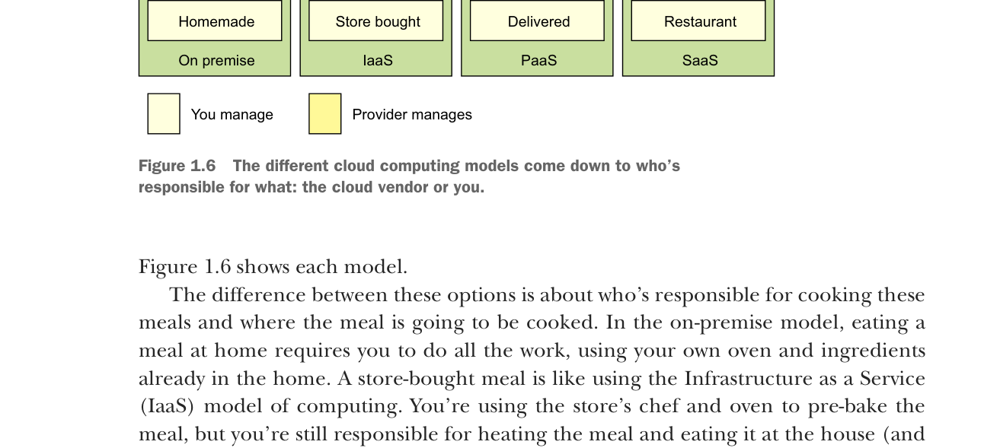

Các mô hình điện toán đám mây khác nhau quy về việc ai chịu trách nhiệm cho điều gì: nhà cung cấp đám mây hay chính bạn.
Hình 1.6 thể hiện từng mô hình.
Sự khác biệt giữa các lựa chọn này là ai chịu trách nhiệm nấu những bữa ăn này và bữa ăn sẽ được nấu ở đâu. Trong mô hình on-premise, ăn bữa ăn tại nhà yêu cầu bạn phải làm tất cả công việc, sử dụng lò nướng và nguyên liệu sẵn có trong nhà. Bữa ăn mua sẵn giống như sử dụng mô hình Infrastructure as a Service (IaaS) trong điện toán. Bạn sử dụng đầu bếp và lò nướng của cửa hàng để làm chín sẵn bữa ăn, nhưng bạn vẫn chịu trách nhiệm hâm nóng bữa ăn và ăn tại nhà (cũng như rửa bát đĩa sau đó).
Trong mô hình Platform as a Service (PaaS), bạn vẫn chịu trách nhiệm về bữa ăn, nhưng bạn càng dựa nhiều hơn vào nhà cung cấp để đảm nhận các công việc cốt lõi liên quan đến việc nấu bữa ăn. Ví dụ, trong mô hình PaaS, bạn cung cấp đĩa và nội thất, nhưng chủ nhà hàng cung cấp lò nướng, nguyên liệu và đầu bếp để nấu chúng. Trong mô hình Software as a Service (SaaS), bạn đến nhà hàng nơi mọi món ăn đã được chuẩn bị sẵn cho bạn. Bạn ăn tại nhà hàng rồi thanh toán khi xong. Bạn cũng không phải chuẩn bị hay rửa bát đĩa.
Những yếu tố then chốt trong từng mô hình này là vấn đề kiểm soát: ai chịu trách nhiệm duy trì cơ sở hạ tầng và những lựa chọn công nghệ nào có sẵn để xây dựng ứng dụng? Trong mô hình IaaS, nhà cung cấp đám mây cung cấp cơ sở hạ tầng cơ bản, nhưng bạn phải chịu trách nhiệm chọn công nghệ và xây dựng giải pháp cuối cùng. Ở phía đối diện, với mô hình SaaS, bạn là người tiêu dùng thụ động dịch vụ do nhà cung cấp cung cấp và không có tiếng nói trong việc lựa chọn công nghệ hay bất kỳ trách nhiệm nào trong việc duy trì cơ sở hạ tầng cho ứng dụng.